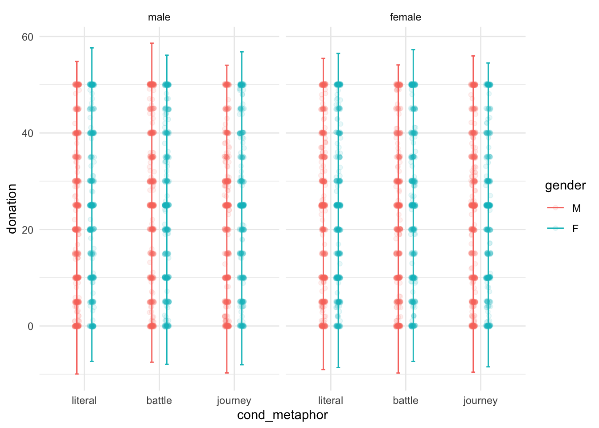
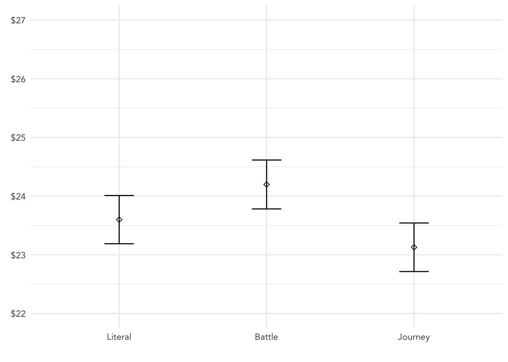
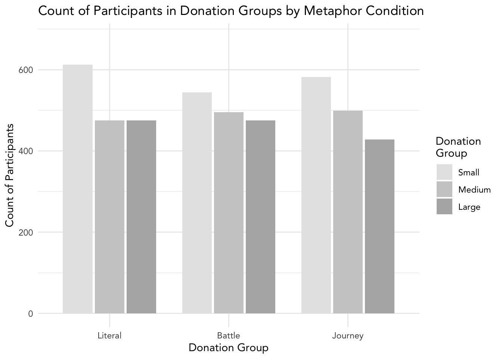

3 Metaphors
This file asks a variety of exploratory questions related to the impact that metaphor framing has on donation.
First, we ask some immediately interesting alternative questions following our confirmatory analysis. After this, we test the relationship between metaphor framing and donation behavior on a more coarse scale. We then assess several other models, including tree based models.
3.1 Immediate Alternative Questions
Does donation behavior differ between participants in the literal condition and the journey condition?
journey_mask = trials$cond_metaphor != "battle"
model_journey_literal_base = lm(update(base.formula, donation ~ .), data = trials[journey_mask, ])
model_journey_literal_full = lm(update(base.formula, donation ~ . + cond_metaphor), data = trials[journey_mask, ])
compare_lm(model_journey_literal_base, model_journey_literal_full)## Analysis of Variance Table
##
## Model 1: donation ~ cond_sex + self_cancer + ff_cancer + gender + education +
## socioeconomic + past_donations.z + age.z
## Model 2: donation ~ cond_sex + self_cancer + ff_cancer + gender + education +
## socioeconomic + past_donations.z + age.z + cond_metaphor
## Res.Df RSS Df Sum of Sq Pr(>Chi)
## 1 3046 780578
## 2 3045 780377 1 201.95 0.3747
## [1] Chisq Stat: 0.795f.sq(
lm(update(base.formula, donation ~ 1), data = trials[journey_mask, ]),
model_journey_literal_base,
model_journey_literal_full
)## [1] 0.0002587885There is no significant difference in donation amounts between journey and literal conditions.
Does donation behavior differ between participants in the literal condition and the battle condition?
battle_mask = trials$cond_metaphor != "journey"
model_battle_literal_base = lm(update(base.formula, donation ~ .), data = trials[battle_mask, ])
model_battle_literal_full = lm(update(base.formula, donation ~ . + cond_metaphor), data = trials[battle_mask, ])
compare_lm(model_battle_literal_base, model_battle_literal_full)## Analysis of Variance Table
##
## Model 1: donation ~ cond_sex + self_cancer + ff_cancer + gender + education +
## socioeconomic + past_donations.z + age.z
## Model 2: donation ~ cond_sex + self_cancer + ff_cancer + gender + education +
## socioeconomic + past_donations.z + age.z + cond_metaphor
## Res.Df RSS Df Sum of Sq Pr(>Chi)
## 1 3051 788677
## 2 3050 788247 1 430.24 0.197
## [1] Chisq Stat: 1.678f.sq(
lm(update(base.formula, donation ~ 1), data = trials[battle_mask, ]),
model_battle_literal_base,
model_battle_literal_full
)## [1] 0.0005458165There is no significant difference in donation amounts between battle and literal conditions.
H: Donors contribute different amounts to a campaign which employs battle metaphors compared to a campaign which employs journey metaphors.
literal_mask = trials$cond_metaphor != "literal"
model_battle_journey_base = lm(update(base.formula, donation ~ .), data = trials[literal_mask, ])
model_battle_journey_full = lm(update(base.formula, donation ~ . + cond_metaphor), data = trials[literal_mask, ])
compare_lm(model_battle_journey_base, model_battle_journey_full)## Analysis of Variance Table
##
## Model 1: donation ~ cond_sex + self_cancer + ff_cancer + gender + education +
## socioeconomic + past_donations.z + age.z
## Model 2: donation ~ cond_sex + self_cancer + ff_cancer + gender + education +
## socioeconomic + past_donations.z + age.z + cond_metaphor
## Res.Df RSS Df Sum of Sq Pr(>Chi)
## 1 2998 770373
## 2 2997 769240 1 1132.9 0.03565 *
## ---
## Signif. codes: 0 '***' 0.001 '**' 0.01 '*' 0.05 '.' 0.1 ' ' 1
## [1] Chisq Stat: 4.449## Warning in if (cls == c("lm") | cls == c("glm", "lm")) {: the condition has
## length > 1 and only the first element will be used## MODEL INFO:
## Observations: 3023
## Dependent Variable: donation
## Type: OLS linear regression
##
## MODEL FIT:
## F(25,2997) = 3.038, p = 0.000
## R² = 0.025
## Adj. R² = 0.017
##
## Standard errors: OLS
## ------------------------------------------------------------------------
## Est. 2.5% 97.5% t val. p
## --------------------------- -------- --------- -------- -------- -------
## (Intercept) 25.346 17.568 33.125 6.389 0.000
## cond_sexfemale -0.597 -1.746 0.551 -1.020 0.308
## self_cancerY 5.880 3.174 8.587 4.260 0.000
## self_cancerOO 2.020 -4.066 8.107 0.651 0.515
## ff_cancerY 1.247 -0.003 2.498 1.955 0.051
## ff_cancerOO 3.263 -0.886 7.413 1.542 0.123
## genderF 0.625 -0.550 1.799 1.043 0.297
## genderNB 1.265 -6.929 9.459 0.303 0.762
## genderOO -4.771 -14.964 5.423 -0.918 0.359
## educationHS -4.424 -12.164 3.316 -1.121 0.263
## educationA -3.937 -11.787 3.912 -0.984 0.325
## educationB -2.767 -10.487 4.953 -0.703 0.482
## educationM -1.011 -8.857 6.834 -0.253 0.800
## educationP -2.769 -11.291 5.753 -0.637 0.524
## educationD -3.110 -11.825 5.605 -0.700 0.484
## educationOO -1.849 -13.362 9.663 -0.315 0.753
## socioeconomic10-25k -0.315 -2.480 1.849 -0.286 0.775
## socioeconomic25-50k 0.935 -1.050 2.919 0.924 0.356
## socioeconomic50-75k 1.250 -0.857 3.356 1.163 0.245
## socioeconomic75-100k 2.069 -0.347 4.485 1.679 0.093
## socioeconomic100-150k 1.205 -1.595 4.005 0.844 0.399
## socioeconomic>150k 3.103 -0.705 6.911 1.598 0.110
## socioeconomicOO -2.337 -6.136 1.462 -1.206 0.228
## past_donations.z 1.140 0.061 2.219 2.072 0.038
## age.z 0.994 -1.018 3.005 0.969 0.333
## cond_metaphorjourney -1.229 -2.376 -0.082 -2.101 0.036
## ------------------------------------------------------------------------f <- f.sq(
lm(donation ~ 1, data = trials[literal_mask, ]),
model_battle_journey_base,
model_battle_journey_full
)With the hold-out data of 1,012, we’d have 23% power to detect a significant main effect of metaphor given the two conditions levels.
There is a significant difference in donation amounts between participants exposed to battle metaphors and participants exposed to journey metaphors (Chisq = 4.0, p < 0.05).
f## [1] 0.001472744length(coef(model_battle_journey_base))-1## [1] 24power = pwr.f2.test(u = 1, v = NULL, f2 = f, power = 0.9)
power##
## Multiple regression power calculation
##
## u = 1
## v = 7134.508
## f2 = 0.001472744
## sig.level = 0.05
## power = 0.9trials %>%
filter(gender %in% c("M", "F")) %>%
ggplot(aes(cond_metaphor, donation, color = gender)) +
theme_minimal() +
# geom_jitter(alpha = 0.05, position = position_dodge(width = 0.3), ) +
geom_point(alpha = 0.1, position = position_jitterdodge(jitter.width = 0.2, jitter.height = 0.2, dodge.width = 0.4)) +
stat_summary(fun.data = mean_sdl, geom = "errorbar", width = 0.1, position = position_dodge(width = 0.4)) +
facet_grid(~cond_sex)
g = trials %>%
ggplot(aes(cond_metaphor, donation)) + ptheme +
stat_summary(fun.data = mean_se, geom = "errorbar", position = position_dodge(width = 0.35), width = 0.2) +
stat_summary(fun.data = mean_se, geom = "point", shape = 5, position = position_dodge(width = 0.35)) +
scale_x_discrete(labels = c("literal" = "Literal\n", "journey" = "Journey\n", "battle" = "Battle\n")) +
scale_y_continuous(labels = scales::dollar) +
coord_cartesian(ylim = c(22, 27)) +
labs(x = element_blank(), y = element_blank())
# geom_signif(comparisons = list(c("literal", "journey"), c("literal", "battle"), c("battle", "journey")),
# y_position = c(26.6, 26, 25.4),
# tip_length = 0.005,
# textsize = 2.75,
# annotations = c("list({\U03C7^2}(1) == 0.6, ~~ ns)",
# "list({\U03C7^2}(1) == 1.7, ~~ ns)",
# "list({\U03C7^2}(1) == 4.0, ~~ p < 0.05)"),
# parse = T)
g
# ggsave("metaphor_donation0.png", g, width = pwidth/1.8, height = pheight, bg = "transparent")3.2 Coarse Donation Groups
3.2.1 Metaphor Condition and Presence on Likelihood of Wide Donation Group
Visualizations of donation amounts seems to convey that donations are generally trimodal, on $0, $25, and $50. What if participants donated according to a coarser scale than anticpated? They may have chosen an amount mentally represented as “small” or “medium” or “large”. In other words, we may see an effect if the donations are binned into three groups: lower, middle, and high; corresponding to $0-16.67, $16.67-33.33, and $33.33-50. Note the difference between these wide bins compared to the narrow bins previously explored (which are resurfaced soon).
trials$donation_wide_group = cut(trials$donation,
breaks = c(0, 50*1/3, 50*2/3, 50),
labels = c("small", "medium", "large"),
include.lowest = T)Contingency table: Wide Donation Groups x Any Metaphor
## FALSE TRUE
##
## small 612 1126
## medium 475 994
## large 475 903
##
## FALSE TRUE
##
## small 0.133 0.246
## medium 0.104 0.217
## large 0.104 0.197g = trials %>%
mutate(int = interaction(cond_metaphor, donation_wide_group)) %>%
group_by(int) %>%
mutate(y = n()) %>%
ggplot(aes(cond_metaphor, y, fill = int)) + ptheme +
geom_col(position = position_dodge(width = 0.8), width = 0.75) +
# dodgerblue1 chartreuse3
scale_fill_manual(values = c("grey90", "grey90", "grey90",
"grey80", "grey80", "grey80",
"grey70", "grey70", "grey70"),
breaks = c("battle.small",
"battle.medium",
"battle.large"),
labels = c("Small", "Medium", "Large"),
name = "Donation\nGroup") +
# scale_fill_manual(values = c("firebrick2", "grey94", "grey94",
# "firebrick4", "grey94", "grey94",
# "grey94", "grey94", "grey94"),
# breaks = c("literal.small",
# "literal.medium"),
# labels = c("Small", "Medium"),
# name = "Donation\nGroup") +
# scale_fill_manual(values = c("grey94", "dodgerblue1", "dodgerblue1",
# "grey94", "dodgerblue4", "dodgerblue4",
# "grey94", "grey94", "grey94"),
# breaks = c("battle.small",
# "battle.medium"),
# labels = c("Small", "Medium"),
# name = "Donation\nGroup") +
# scale_fill_manual(values = c("firebrick2", "dodgerblue1", "dodgerblue1",
# "firebrick4", "dodgerblue4", "dodgerblue4",
# "grey94", "grey94", "grey94"),
# breaks = c("battle.small",
# "literal.small",
# "battle.medium",
# "literal.medium"),
# labels = c("Small", "Small",
# "Medium", "Medium"),
# name = "Donation\nGroup") +
scale_x_discrete(labels = c("literal" = "Literal", "battle" = "Battle", "journey" = "Journey")) +
labs(title = "Count of Participants in Donation Groups by Metaphor Condition", x = "Donation Group", y = "Count of Participants") +
coord_cartesian(ylim = c(0, 680))
# # geom_signif(xmin = 1 - 0.13,
# # xmax = 2.5,
# # y_position = 650,
# # tip_length = 0.1,
# # textsize = 2.75,
# # annotations = "list({\U03C7^2}(1) == 4.2, ~~ p < 0.05)",
# # parse = T)
#
#
g
# ggsave("coarse_donations0.png", g, width = pwidth, height = pheight, bg = "transparent")H: Donors are more likely to contribute to the large third when exposed to a campaign which employs battle or journey metaphors compared to a literal campaign
model_sm_l_base = glm(update(base.formula, I(donation_wide_group == "large") ~ .),
data = trials,
family = "binomial")
model_sm_l_full = glm(update(base.formula, I(donation_wide_group == "large") ~ . + cond_anymet),
data = trials,
family = "binomial")
compare_lm(model_sm_l_base, model_sm_l_full)## Analysis of Deviance Table
##
## Model 1: I(donation_wide_group == "large") ~ cond_sex + self_cancer +
## ff_cancer + gender + education + socioeconomic + past_donations.z +
## age.z
## Model 2: I(donation_wide_group == "large") ~ cond_sex + self_cancer +
## ff_cancer + gender + education + socioeconomic + past_donations.z +
## age.z + cond_anymet
## Resid. Df Resid. Dev Df Deviance Pr(>Chi)
## 1 4560 5527.5
## 2 4559 5527.4 1 0.1183 0.7309
## [1] Chisq Stat: 0.118There is no evidence that participants who were exposed to metaphor were any more likely to be “large” donors.
H: Donors are more likely to contribute to the large third or the medium third when exposed to a campaign which employs battle or journey metaphors compared to a literal campaign
model_s_ml_base = glm(update(base.formula, I(donation_wide_group != "small") ~ .),
data = trials,
family = "binomial")
model_s_ml_full = glm(update(base.formula, I(donation_wide_group != "small") ~ . + cond_anymet),
data = trials,
family = "binomial")
compare_lm(model_s_ml_base, model_s_ml_full)## Analysis of Deviance Table
##
## Model 1: I(donation_wide_group != "small") ~ cond_sex + self_cancer +
## ff_cancer + gender + education + socioeconomic + past_donations.z +
## age.z
## Model 2: I(donation_wide_group != "small") ~ cond_sex + self_cancer +
## ff_cancer + gender + education + socioeconomic + past_donations.z +
## age.z + cond_anymet
## Resid. Df Resid. Dev Df Deviance Pr(>Chi)
## 1 4560 5998.8
## 2 4559 5996.8 1 1.9888 0.1585
## [1] Chisq Stat: 1.989There is marginal evidence that participants who were exposed to metaphor were slightly more likely to be “large” or “medium” donors. We can break this down further to see differences in likelihood that metaphor exposed participants are more or less likely to be either “medium” or “large” donors.
mask = trials$donation_wide_group %in% c("small", "medium")
model_s_m_base = glm(update(base.formula, I(donation_wide_group == "medium") ~ .),
data = trials[mask, ],
family = "binomial")
model_s_m_full = glm(update(base.formula, I(donation_wide_group == "medium") ~ . + cond_anymet),
data = trials[mask, ],
family = "binomial")
compare_lm(model_s_m_base, model_s_m_full)## Analysis of Deviance Table
##
## Model 1: I(donation_wide_group == "medium") ~ cond_sex + self_cancer +
## ff_cancer + gender + education + socioeconomic + past_donations.z +
## age.z
## Model 2: I(donation_wide_group == "medium") ~ cond_sex + self_cancer +
## ff_cancer + gender + education + socioeconomic + past_donations.z +
## age.z + cond_anymet
## Resid. Df Resid. Dev Df Deviance Pr(>Chi)
## 1 3182 4381.6
## 2 3181 4378.0 1 3.5877 0.05821 .
## ---
## Signif. codes: 0 '***' 0.001 '**' 0.01 '*' 0.05 '.' 0.1 ' ' 1
## [1] Chisq Stat: 3.588## Warning in if (cls == c("lm") | cls == c("glm", "lm")) {: the condition has
## length > 1 and only the first element will be used## MODEL INFO:
## Observations: 3207
## Dependent Variable: I(donation_wide_group == "medium")
## Type: Generalized linear model
## Family: binomial
## Link function: logit
##
## MODEL FIT:
## χ²(25) = 45.261, p = 0.008
## Pseudo-R² (Cragg-Uhler) = 0.019
## Pseudo-R² (McFadden) = 0.010
## AIC = 4429.995, BIC = 4587.895
##
## Standard errors: MLE
## ----------------------------------------------------------------------
## Est. 2.5% 97.5% z val. p
## --------------------------- -------- -------- ------- -------- -------
## (Intercept) -0.214 -1.163 0.735 -0.441 0.659
## cond_sexfemale -0.043 -0.183 0.097 -0.600 0.548
## self_cancerY 0.424 0.047 0.801 2.206 0.027
## self_cancerOO -0.051 -0.872 0.770 -0.121 0.904
## ff_cancerY 0.095 -0.055 0.246 1.240 0.215
## ff_cancerOO -0.104 -0.674 0.466 -0.359 0.720
## genderF 0.086 -0.058 0.231 1.175 0.240
## genderNB -0.065 -1.046 0.917 -0.129 0.897
## genderOO -0.699 -2.066 0.668 -1.002 0.316
## educationHS -0.337 -1.280 0.607 -0.700 0.484
## educationA -0.234 -1.190 0.721 -0.481 0.631
## educationB -0.073 -1.013 0.868 -0.151 0.880
## educationM 0.055 -0.902 1.011 0.112 0.911
## educationP 0.120 -0.911 1.151 0.228 0.819
## educationD -0.255 -1.327 0.817 -0.467 0.641
## educationOO -0.132 -1.619 1.355 -0.174 0.862
## socioeconomic10-25k 0.051 -0.209 0.311 0.383 0.701
## socioeconomic25-50k 0.040 -0.198 0.278 0.332 0.740
## socioeconomic50-75k -0.067 -0.322 0.188 -0.516 0.606
## socioeconomic75-100k 0.137 -0.158 0.432 0.910 0.363
## socioeconomic100-150k -0.014 -0.354 0.326 -0.081 0.935
## socioeconomic>150k -0.282 -0.784 0.221 -1.098 0.272
## socioeconomicOO -0.474 -0.962 0.014 -1.902 0.057
## past_donations.z 0.235 -0.132 0.601 1.255 0.210
## age.z 0.100 -0.145 0.345 0.797 0.425
## cond_anymetTRUE 0.143 -0.005 0.292 1.892 0.058
## ----------------------------------------------------------------------f <- f.sq(
lm(donation ~ 1, data = trials[mask, ]),
model_s_m_base,
model_s_m_full
)
f## [1] 0.0008194924length(coef(model_s_m_base))-1## [1] 24power = pwr.f2.test(u = 1, v = NULL, f2 = f, power = 0.8)
power##
## Multiple regression power calculation
##
## u = 1
## v = 9577.631
## f2 = 0.0008194924
## sig.level = 0.05
## power = 0.8From G*Power, total sample size should equal 7969 to reach 80% power.
mask = trials$donation_wide_group %in% c("medium", "large") & trials$cond_metaphor %in% c("literal", "battle")
model_met_s_l_base = glm(update(base.formula, I(donation_wide_group == "large") ~ .),
data = trials[mask, ],
family = "binomial")
model_met_s_l_full = glm(update(base.formula, I(donation_wide_group == "large") ~ . + cond_metaphor),
data = trials[mask, ],
family = "binomial")
compare_lm(model_met_s_l_base, model_met_s_l_full)## Analysis of Deviance Table
##
## Model 1: I(donation_wide_group == "large") ~ cond_sex + self_cancer +
## ff_cancer + gender + education + socioeconomic + past_donations.z +
## age.z
## Model 2: I(donation_wide_group == "large") ~ cond_sex + self_cancer +
## ff_cancer + gender + education + socioeconomic + past_donations.z +
## age.z + cond_metaphor
## Resid. Df Resid. Dev Df Deviance Pr(>Chi)
## 1 1895 2623.2
## 2 1894 2623.1 1 0.039688 0.8421
## [1] Chisq Stat: 0.04mask = trials$donation_wide_group %in% c("small", "large")
model_s_l_base = glm(update(base.formula, I(donation_wide_group == "large") ~ .),
data = trials[mask, ],
family = "binomial")
model_s_l_full = glm(update(base.formula, I(donation_wide_group == "large") ~ . + cond_anymet),
data = trials[mask, ],
family = "binomial")
compare_lm(model_s_l_base, model_s_l_full)## Analysis of Deviance Table
##
## Model 1: I(donation_wide_group == "large") ~ cond_sex + self_cancer +
## ff_cancer + gender + education + socioeconomic + past_donations.z +
## age.z
## Model 2: I(donation_wide_group == "large") ~ cond_sex + self_cancer +
## ff_cancer + gender + education + socioeconomic + past_donations.z +
## age.z + cond_anymet
## Resid. Df Resid. Dev Df Deviance Pr(>Chi)
## 1 3091 4169.3
## 2 3090 4169.2 1 0.12196 0.7269
## [1] Chisq Stat: 0.122There is evidence that participants exposed to metaphor are more likely to donate “medium” amounts than “small” amounts (Chisq = 4.2, p < 0.05). However, there is no evidence that participants who are exposed to metaphor are any more likely to donate “large” amounts than “small” amounts.
NH: Participants who were exposed to battle metaphor versus those exposed to journey metaphors were equally likely to choose to donate a “large” amount compared to a “small” amount.
mask = trials$donation_wide_group %in% c("small", "large") & trials$cond_metaphor %in% c("journey", "battle")
model_met_s_l_base = glm(update(base.formula, I(donation_wide_group == "large") ~ .),
data = trials[mask, ],
family = "binomial")
model_met_s_l_full = glm(update(base.formula, I(donation_wide_group == "large") ~ . + cond_metaphor),
data = trials[mask, ],
family = "binomial")
compare_lm(model_met_s_l_base, model_met_s_l_full)## Analysis of Deviance Table
##
## Model 1: I(donation_wide_group == "large") ~ cond_sex + self_cancer +
## ff_cancer + gender + education + socioeconomic + past_donations.z +
## age.z
## Model 2: I(donation_wide_group == "large") ~ cond_sex + self_cancer +
## ff_cancer + gender + education + socioeconomic + past_donations.z +
## age.z + cond_metaphor
## Resid. Df Resid. Dev Df Deviance Pr(>Chi)
## 1 2004 2714.1
## 2 2003 2709.3 1 4.7393 0.02948 *
## ---
## Signif. codes: 0 '***' 0.001 '**' 0.01 '*' 0.05 '.' 0.1 ' ' 1
## [1] Chisq Stat: 4.739## Warning in if (cls == c("lm") | cls == c("glm", "lm")) {: the condition has
## length > 1 and only the first element will be used## MODEL INFO:
## Observations: 2029
## Dependent Variable: I(donation_wide_group == "large")
## Type: Generalized linear model
## Family: binomial
## Link function: logit
##
## MODEL FIT:
## χ²(25) = 78.901, p = 0.000
## Pseudo-R² (Cragg-Uhler) = 0.051
## Pseudo-R² (McFadden) = 0.028
## AIC = 2761.331, BIC = 2907.329
##
## Standard errors: MLE
## -----------------------------------------------------------------------
## Est. 2.5% 97.5% z val. p
## --------------------------- -------- -------- -------- -------- -------
## (Intercept) 0.025 -1.147 1.197 0.042 0.966
## cond_sexfemale -0.092 -0.272 0.088 -1.005 0.315
## self_cancerY 0.886 0.443 1.330 3.916 0.000
## self_cancerOO 0.049 -0.856 0.954 0.107 0.915
## ff_cancerY 0.187 -0.010 0.384 1.857 0.063
## ff_cancerOO 0.359 -0.263 0.981 1.130 0.258
## genderF 0.036 -0.147 0.218 0.381 0.703
## genderNB -0.083 -1.402 1.235 -0.124 0.901
## genderOO -0.753 -2.414 0.909 -0.887 0.375
## educationHS -0.609 -1.779 0.561 -1.021 0.307
## educationA -0.516 -1.705 0.674 -0.850 0.395
## educationB -0.310 -1.477 0.857 -0.520 0.603
## educationM -0.056 -1.243 1.132 -0.092 0.927
## educationP -0.430 -1.734 0.873 -0.647 0.517
## educationD -0.380 -1.696 0.936 -0.566 0.572
## educationOO -0.184 -1.948 1.580 -0.204 0.838
## socioeconomic10-25k -0.080 -0.426 0.265 -0.456 0.649
## socioeconomic25-50k 0.141 -0.171 0.453 0.886 0.376
## socioeconomic50-75k 0.183 -0.147 0.512 1.086 0.277
## socioeconomic75-100k 0.204 -0.177 0.584 1.049 0.294
## socioeconomic100-150k 0.127 -0.305 0.560 0.577 0.564
## socioeconomic>150k 0.394 -0.184 0.973 1.336 0.182
## socioeconomicOO -0.265 -0.850 0.320 -0.889 0.374
## past_donations.z 1.503 0.537 2.470 3.049 0.002
## age.z -0.012 -0.331 0.307 -0.074 0.941
## cond_metaphorjourney -0.199 -0.379 -0.020 -2.175 0.030
## -----------------------------------------------------------------------f <- f.sq(
lm(donation ~ 1, data = trials[mask, ]),
model_met_s_l_base,
model_met_s_l_full
)
f## [1] 0.001749249length(coef(model_met_s_l_base))-1## [1] 24power = pwr.f2.test(u = 1, v = NULL, f2 = f, power = 0.8)
power##
## Multiple regression power calculation
##
## u = 1
## v = 4486.909
## f2 = 0.001749249
## sig.level = 0.05
## power = 0.8From G*Power, a total sample size of 4,589 is required for 80% power.
Given the observed data for participants who saw either battle or journey metaphors, those who were exposed to battle metaphors were significantly more likely to donate a “large” amount compared to a “small” amount.
NH: Participants who were exposed to battle metaphor versus those exposed to journey metaphors were equally likely to choose to donate a “large” amount compared to a “medium” amount.
mask = trials$donation_wide_group %in% c("medium", "large") & trials$cond_metaphor %in% c("journey", "battle")
model_met_m_l_base = glm(update(base.formula, I(donation_wide_group == "large") ~ .),
data = trials[mask, ],
family = "binomial")
model_met_m_l_full = glm(update(base.formula, I(donation_wide_group == "large") ~ . + cond_metaphor),
data = trials[mask, ],
family = "binomial")
compare_lm(model_met_m_l_base, model_met_m_l_full)## Analysis of Deviance Table
##
## Model 1: I(donation_wide_group == "large") ~ cond_sex + self_cancer +
## ff_cancer + gender + education + socioeconomic + past_donations.z +
## age.z
## Model 2: I(donation_wide_group == "large") ~ cond_sex + self_cancer +
## ff_cancer + gender + education + socioeconomic + past_donations.z +
## age.z + cond_metaphor
## Resid. Df Resid. Dev Df Deviance Pr(>Chi)
## 1 1872 2592.4
## 2 1871 2590.3 1 2.1086 0.1465
## [1] Chisq Stat: 2.109NS
H: Participants who were exposed to battle metaphor versus those exposed to journey metaphors were equally likely to choose to donate a “medium” amount compared to a “small” amount.
mask = trials$donation_wide_group %in% c("small", "medium") & trials$cond_metaphor %in% c("journey", "battle")
model_met_s_m_base = glm(update(base.formula, I(donation_wide_group == "medium") ~ .),
data = trials[mask, ],
family = "binomial")
model_met_s_m_full = glm(update(base.formula, I(donation_wide_group == "medium") ~ . + cond_metaphor),
data = trials[mask, ],
family = "binomial")
compare_lm(model_met_s_m_base, model_met_s_m_full)## Analysis of Deviance Table
##
## Model 1: I(donation_wide_group == "medium") ~ cond_sex + self_cancer +
## ff_cancer + gender + education + socioeconomic + past_donations.z +
## age.z
## Model 2: I(donation_wide_group == "medium") ~ cond_sex + self_cancer +
## ff_cancer + gender + education + socioeconomic + past_donations.z +
## age.z + cond_metaphor
## Resid. Df Resid. Dev Df Deviance Pr(>Chi)
## 1 2095 2903.7
## 2 2094 2903.1 1 0.59357 0.441
## [1] Chisq Stat: 0.594NS
3.2.2 Metaphor Condition and Presence on Likelihood of Narrow Donation Group
Because the campaign is fictional and participants are given an upper bound on their donations, there may not be the same motivations to donate specific amounts compared to a real world fundraiser. Participants may choose to donate under one of the three most salient responses: $0, $25, or $50, or something very close ($5 to $0 or $45 to $50).
Thus, we measure the effect of metaphor presence of participants’ decision to choose one of these three groups of donation amounts (small, medium, and large).
## FALSE TRUE
##
## 609 1143
## large 243 453
## medium 432 886
## small 278 541
##
## FALSE TRUE
##
## 0.133 0.249
## large 0.053 0.099
## medium 0.094 0.193
## small 0.061 0.118H: Donors are more likely to contribute a “large” donation ($45 or $50) when exposed to a campaign which employs battle or journey metaphors compared to a literal campaign
mask = trials$donation_narrow_group != ""
model_sm_l_base = glm(update(base.formula, I(donation_narrow_group == "large") ~ .),
data = trials[mask, ],
family = "binomial")
model_sm_l_full = glm(update(base.formula, I(donation_narrow_group == "large") ~ . + cond_anymet),
data = trials[mask, ],
family = "binomial")
compare_lm(model_sm_l_base, model_sm_l_full)## Analysis of Deviance Table
##
## Model 1: I(donation_narrow_group == "large") ~ cond_sex + self_cancer +
## ff_cancer + gender + education + socioeconomic + past_donations.z +
## age.z
## Model 2: I(donation_narrow_group == "large") ~ cond_sex + self_cancer +
## ff_cancer + gender + education + socioeconomic + past_donations.z +
## age.z + cond_anymet
## Resid. Df Resid. Dev Df Deviance Pr(>Chi)
## 1 2808 3101.5
## 2 2807 3101.0 1 0.58633 0.4438
## [1] Chisq Stat: 0.586There is no evidence that there is an effect of metaphor presence on participants’ decision to make a small or medium donation compared to a large donation.
H: Donors are more likely to contribute a “large” or “medium” donation ($20, $25, $30) when exposed to a campaign which employs battle or journey metaphors compared to a literal campaign
mask = trials$donation_narrow_group != ""
model_s_ml_base = glm(update(base.formula, I(donation_narrow_group != "small") ~ .),
data = trials[mask, ],
family = "binomial")
model_s_ml_full = glm(update(base.formula, I(donation_narrow_group != "small") ~ . + cond_anymet),
data = trials[mask, ],
family = "binomial")
compare_lm(model_s_ml_base, model_s_ml_full)## Analysis of Deviance Table
##
## Model 1: I(donation_narrow_group != "small") ~ cond_sex + self_cancer +
## ff_cancer + gender + education + socioeconomic + past_donations.z +
## age.z
## Model 2: I(donation_narrow_group != "small") ~ cond_sex + self_cancer +
## ff_cancer + gender + education + socioeconomic + past_donations.z +
## age.z + cond_anymet
## Resid. Df Resid. Dev Df Deviance Pr(>Chi)
## 1 2808 3354.7
## 2 2807 3354.4 1 0.28235 0.5952
## [1] Chisq Stat: 0.282There is no evidence that there is an effect of metaphor presence on participants’ decision to make a small donation compared to a medium or large donation.
We can attempt to break down this last result into a small-medium contrast and small-large contrast:
mask = trials$donation_narrow_group %in% c("small", "medium")
model_s_m_base = glm(update(base.formula, I(donation_narrow_group == "medium") ~ .),
data = trials[mask, ],
family = "binomial")
model_s_m_full = glm(update(base.formula, I(donation_narrow_group == "medium") ~ . + cond_anymet),
data = trials[mask, ],
family = "binomial")
compare_lm(model_s_m_base, model_s_m_full)## Analysis of Deviance Table
##
## Model 1: I(donation_narrow_group == "medium") ~ cond_sex + self_cancer +
## ff_cancer + gender + education + socioeconomic + past_donations.z +
## age.z
## Model 2: I(donation_narrow_group == "medium") ~ cond_sex + self_cancer +
## ff_cancer + gender + education + socioeconomic + past_donations.z +
## age.z + cond_anymet
## Resid. Df Resid. Dev Df Deviance Pr(>Chi)
## 1 2112 2806.6
## 2 2111 2805.9 1 0.73555 0.3911
## [1] Chisq Stat: 0.736There is no evidence that there is an effect of metaphor presence on participants’ decision to make a small donation compared to a medium donation.
mask = trials$donation_narrow_group %in% c("small", "large")
model_s_l_base = glm(update(base.formula, I(donation_narrow_group == "large") ~ .),
data = trials[mask, ],
family = "binomial")
model_s_l_full = glm(update(base.formula, I(donation_narrow_group == "large") ~ . + cond_anymet),
data = trials[mask, ],
family = "binomial")
compare_lm(model_s_l_base, model_s_l_full)## Analysis of Deviance Table
##
## Model 1: I(donation_narrow_group == "large") ~ cond_sex + self_cancer +
## ff_cancer + gender + education + socioeconomic + past_donations.z +
## age.z
## Model 2: I(donation_narrow_group == "large") ~ cond_sex + self_cancer +
## ff_cancer + gender + education + socioeconomic + past_donations.z +
## age.z + cond_anymet
## Resid. Df Resid. Dev Df Deviance Pr(>Chi)
## 1 1490 2022.7
## 2 1489 2022.6 1 0.16003 0.6891
## [1] Chisq Stat: 0.16There is no evidence that there is an effect of metaphor presence on participants’ decision to make a small donation compared to a large donation.
NH: Participants who were exposed to battle metaphor versus those exposed to journey metaphors were equally likely to choose to donate a “large” amount compared to a “small” amount.
mask = trials$donation_narrow_group %in% c("small", "large") & trials$cond_metaphor %in% c("journey", "battle")
model_met_s_l_base = glm(update(base.formula, I(donation_narrow_group == "large") ~ .),
data = trials[mask, ],
family = "binomial")
model_met_s_l_full = glm(update(base.formula, I(donation_narrow_group == "large") ~ . + cond_metaphor),
data = trials[mask, ],
family = "binomial")
compare_lm(model_met_s_l_base, model_met_s_l_full)## Analysis of Deviance Table
##
## Model 1: I(donation_narrow_group == "large") ~ cond_sex + self_cancer +
## ff_cancer + gender + education + socioeconomic + past_donations.z +
## age.z
## Model 2: I(donation_narrow_group == "large") ~ cond_sex + self_cancer +
## ff_cancer + gender + education + socioeconomic + past_donations.z +
## age.z + cond_metaphor
## Resid. Df Resid. Dev Df Deviance Pr(>Chi)
## 1 969 1317.7
## 2 968 1316.4 1 1.2636 0.261
## [1] Chisq Stat: 1.264Given the observed data for participants who saw either battle or journey metaphors, those who were exposed to battle metaphors were significantly more likely to donate a “large” amount compared to a “small” amount.
NH: Participants who were exposed to battle metaphor versus those exposed to journey metaphors were equally likely to choose to donate a “large” amount compared to a “medium” amount.
mask = trials$donation_narrow_group %in% c("medium", "large") & trials$cond_metaphor %in% c("journey", "battle")
model_met_m_l_base = glm(update(base.formula, I(donation_narrow_group == "large") ~ .),
data = trials[mask, ],
family = "binomial")
model_met_m_l_full = glm(update(base.formula, I(donation_narrow_group == "large") ~ . + cond_metaphor),
data = trials[mask, ],
family = "binomial")
compare_lm(model_met_m_l_base, model_met_m_l_full)## Analysis of Deviance Table
##
## Model 1: I(donation_narrow_group == "large") ~ cond_sex + self_cancer +
## ff_cancer + gender + education + socioeconomic + past_donations.z +
## age.z
## Model 2: I(donation_narrow_group == "large") ~ cond_sex + self_cancer +
## ff_cancer + gender + education + socioeconomic + past_donations.z +
## age.z + cond_metaphor
## Resid. Df Resid. Dev Df Deviance Pr(>Chi)
## 1 1314 1668.7
## 2 1313 1667.8 1 0.97847 0.3226
## [1] Chisq Stat: 0.978H: Participants who were exposed to battle metaphor versus those exposed to journey metaphors were equally likely to choose to donate a “medium” amount compared to a “small” amount.
mask = trials$donation_narrow_group %in% c("small", "medium") & trials$cond_metaphor %in% c("journey", "battle")
model_met_s_m_base = glm(update(base.formula, I(donation_narrow_group == "medium") ~ .),
data = trials[mask, ],
family = "binomial")
model_met_s_m_full = glm(update(base.formula, I(donation_narrow_group == "medium") ~ . + cond_metaphor),
data = trials[mask, ],
family = "binomial")
compare_lm(model_met_s_m_base, model_met_s_m_full)## Analysis of Deviance Table
##
## Model 1: I(donation_narrow_group == "medium") ~ cond_sex + self_cancer +
## ff_cancer + gender + education + socioeconomic + past_donations.z +
## age.z
## Model 2: I(donation_narrow_group == "medium") ~ cond_sex + self_cancer +
## ff_cancer + gender + education + socioeconomic + past_donations.z +
## age.z + cond_metaphor
## Resid. Df Resid. Dev Df Deviance Pr(>Chi)
## 1 1402 1866.2
## 2 1401 1866.1 1 0.11042 0.7397
## [1] Chisq Stat: 0.113.3 Broader Alternative Questions
3.3.1 Random Forest Regression
Use Random Forest regression models to quantify the importance of metaphor on donation behavior.
library(randomForest)## randomForest 4.6-14## Type rfNews() to see new features/changes/bug fixes.##
## Attaching package: 'randomForest'## The following object is masked from 'package:gridExtra':
##
## combine## The following object is masked from 'package:dplyr':
##
## combine## The following object is masked from 'package:ggplot2':
##
## margin3.3.1.1 Any Metaphor compared to Literal
# estimate <- function(data, ix) {
# rf_null = randomForest(update(base.formula, donation ~ . ),
# data = data[ix, ],
# mtry = 2,
# nPerm = 3,
# ntree = 100)
#
# rf_anymet = randomForest(update(base.formula, donation ~ . + cond_anymet),
# data = data[ix, ],
# mtry = 2,
# nPerm = 3,
# ntree = 100)
#
# return(mean(rf_null$mse) - mean(rf_anymet$mse))
# }
#
# tic()
# bs <- boot(trials, estimate, R = 16)
# toc()
#
# tic()
# ci <- boot.ci(bs, type = "perc")
# toc()# ci# cor(model.matrix(~ 0 + past_donations + urgent + sympathy + self_cancer + ff_cancer + age, data = trials))Here are the relative variable importance measures for each variable over 1,000 trees, including cond_anymet.
# imp <- cbind(importance(rf_anymet), se = rf_anymet$importanceSD) %>%
# as.data.frame()
# imp <- cbind(imp, var = rownames(imp))
# rownames(imp) <- NULL
# colnames(imp)[1] <- "PercentMSEInc"
# imp %>%
# arrange(PercentMSEInc)Here are the same numbers but plotted with two standard errors (derived via permutation).
# imp %>%
# arrange(PercentMSEInc) %>%
# mutate(var = factor(var, var)) %>%
# ggplot(aes(var, PercentMSEInc)) + itheme +
# labs(x = "Predictor", y = "Percent MSE Increase") +
# geom_errorbar(aes(ymin = PercentMSEInc - 2*se, ymax = PercentMSEInc + 2*se), width = 0.15) +
# geom_point(shape = 16) +
# geom_text(aes(label = round(PercentMSEInc, 2)), nudge_x = 0.3, size = 3) +
# coord_flip()3.3.1.2 Battle compared to Journey
# rf_battle_journey = randomForest(update(base.formula, donation ~ . + cond_metaphor),
# data = trials %>% filter(cond_metaphor %in% c("battle", "journey")),
# mtry = 2,
# nPerm = 3,
# importance = T,
# ntree = 1000,
# do.trace = 250)
# rf_battle_journeyHere are the relative variable importance measures for each variable, including cond_anymet.
# imp <- cbind(importance(rf_battle_journey), se = rf_battle_journey$importanceSD) %>%
# as.data.frame()
# imp <- cbind(imp, var = rownames(imp))
# rownames(imp) <- NULL
# colnames(imp)[1] <- "PercentMSEInc"
# imp %>%
# arrange(PercentMSEInc)Here are the same numbers but plotted with two standard errors (derived via permutation).
# imp %>%
# arrange(PercentMSEInc) %>%
# mutate(var = factor(var, var)) %>%
# ggplot(aes(var, PercentMSEInc)) + itheme +
# labs(x = "Predictor", y = "Percent MSE Increase") +
# geom_errorbar(aes(ymin = PercentMSEInc - 2*se, ymax = PercentMSEInc + 2*se), width = 0.15) +
# geom_point(shape = 16) +
# geom_text(aes(label = round(PercentMSEInc, 2)), nudge_x = 0.3, size = 3) +
# coord_flip()3.3.2 Gradient Boosted Trees
Use Extreme Gradient Boosted Trees to measure the importance of metaphor on donation behavior.
# library(xgboost)# train <- model.matrix(update(base.formula, ~ 0 + . + cond_anymet), trials)
# data <- xgb.DMatrix(data = train, label = trials$donation)
#
# xgboost_anymet <- xgboost(data = data,
# nrounds = 10,
# max_depth = 3,
# subsample = 0.5)# imp <- xgb.importance(model = xgboost_anymet)
# imp3.3.3 Generalized Additive Models
There might be some extra information encoded in people’s past donation behavior and age which isn’t properly captured by linear coefficients. Here we’ll model the immediate alternative questions as above but using additive smoothing splines on these two covariates.
First, load up a common GAM library.
library(mgcv)## Loading required package: nlme##
## Attaching package: 'nlme'## The following object is masked from 'package:glue':
##
## collapse## The following object is masked from 'package:dplyr':
##
## collapse## This is mgcv 1.8-31. For overview type 'help("mgcv-package")'.3.3.3.1 Any Metaphor compared to Literal
gam_anymet_base <- gam(donation ~ cond_sex + self_cancer + ff_cancer + gender + education + socioeconomic +
s(past_donations.z) + s(age.z),
data = trials)
gam_anymet_full <- gam(donation ~ cond_sex + self_cancer + ff_cancer + gender + education + socioeconomic +
s(past_donations.z) + s(age.z) + cond_anymet,
data = trials)
compare_lm(gam_anymet_base, gam_anymet_full)## Analysis of Deviance Table
##
## Model 1: donation ~ cond_sex + self_cancer + ff_cancer + gender + education +
## socioeconomic + s(past_donations.z) + s(age.z)
## Model 2: donation ~ cond_sex + self_cancer + ff_cancer + gender + education +
## socioeconomic + s(past_donations.z) + s(age.z) + cond_anymet
## Resid. Df Resid. Dev Df Deviance Pr(>Chi)
## 1 4546.7 1153194
## 2 4545.7 1153147 1.0108 46.672 0.6723
## [1] Chisq Stat: 0.1863.3.3.2 Battle compared to Literal
mask = trials$cond_metaphor %in% c("battle", "literal")
gam_battle_literal_base <- gam(donation ~ cond_sex + self_cancer + ff_cancer + gender + education + socioeconomic +
s(past_donations.z) + s(age.z),
data = trials[mask, ])
gam_battle_literal_full <- gam(donation ~ cond_sex + self_cancer + ff_cancer + gender + education + socioeconomic +
s(past_donations.z) + s(age.z) + cond_metaphor,
data = trials[mask, ])
compare_lm(gam_battle_literal_base, gam_battle_literal_full)## Analysis of Deviance Table
##
## Model 1: donation ~ cond_sex + self_cancer + ff_cancer + gender + education +
## socioeconomic + s(past_donations.z) + s(age.z)
## Model 2: donation ~ cond_sex + self_cancer + ff_cancer + gender + education +
## socioeconomic + s(past_donations.z) + s(age.z) + cond_metaphor
## Resid. Df Resid. Dev Df Deviance Pr(>Chi)
## 1 3040.4 778016
## 2 3039.3 777577 1.0508 439.05 0.2016
## [1] Chisq Stat: 1.7363.3.3.3 Journey compared to Literal
mask = trials$cond_metaphor %in% c("journey", "literal")
gam_journey_literal_base <- gam(donation ~ cond_sex + self_cancer + ff_cancer + gender + education + socioeconomic +
s(past_donations.z) + s(age.z),
data = trials[mask, ])
gam_journey_literal_full <- gam(donation ~ cond_sex + self_cancer + ff_cancer + gender + education + socioeconomic +
s(past_donations.z) + s(age.z) + cond_metaphor,
data = trials[mask, ])
compare_lm(gam_journey_literal_base, gam_journey_literal_full)## Analysis of Deviance Table
##
## Model 1: donation ~ cond_sex + self_cancer + ff_cancer + gender + education +
## socioeconomic + s(past_donations.z) + s(age.z)
## Model 2: donation ~ cond_sex + self_cancer + ff_cancer + gender + education +
## socioeconomic + s(past_donations.z) + s(age.z) + cond_metaphor
## Resid. Df Resid. Dev Df Deviance Pr(>Chi)
## 1 3034.1 765650
## 2 3033.1 765552 0.97175 98.605 0.5201
## [1] Chisq Stat: 0.3963.3.3.4 Battle compared to Journey
mask = trials$cond_metaphor %in% c("battle", "journey")
gam_battle_journey_base <- gam(donation ~ cond_sex + self_cancer + ff_cancer + gender + education + socioeconomic +
s(past_donations.z) + s(age.z),
data = trials[mask, ])
gam_battle_journey_full <- gam(donation ~ cond_sex + self_cancer + ff_cancer + gender + education + socioeconomic +
s(past_donations.z) + s(age.z) + cond_metaphor,
data = trials[mask, ])
compare_lm(gam_battle_journey_base, gam_battle_journey_full)## Analysis of Deviance Table
##
## Model 1: donation ~ cond_sex + self_cancer + ff_cancer + gender + education +
## socioeconomic + s(past_donations.z) + s(age.z)
## Model 2: donation ~ cond_sex + self_cancer + ff_cancer + gender + education +
## socioeconomic + s(past_donations.z) + s(age.z) + cond_metaphor
## Resid. Df Resid. Dev Df Deviance Pr(>Chi)
## 1 2985.6 753514
## 2 2984.6 752587 1.0016 926.9 0.05526 .
## ---
## Signif. codes: 0 '***' 0.001 '**' 0.01 '*' 0.05 '.' 0.1 ' ' 1
## [1] Chisq Stat: 3.721## Warning in cls == c("glm", "lm"): longer object length is not a multiple of
## shorter object length## Warning in if (cls == c("lm") | cls == c("glm", "lm")) {: the condition has
## length > 1 and only the first element will be used##
## Family: gaussian
## Link function: identity
##
## Formula:
## donation ~ cond_sex + self_cancer + ff_cancer + gender + education +
## socioeconomic + s(past_donations.z) + s(age.z) + cond_metaphor
##
## Parametric coefficients:
## Estimate Std. Error t value Pr(>|t|)
## (Intercept) 25.72714 3.94114 6.528 7.81e-11 ***
## cond_sexfemale -0.59682 0.58174 -1.026 0.305009
## self_cancerY 5.16780 1.37542 3.757 0.000175 ***
## self_cancerOO 2.30784 3.07855 0.750 0.453524
## ff_cancerY 1.07844 0.63591 1.696 0.090011 .
## ff_cancerOO 3.10886 2.10004 1.480 0.138877
## genderF 0.42876 0.59490 0.721 0.471134
## genderNB 0.93629 4.14687 0.226 0.821386
## genderOO -4.34142 5.15509 -0.842 0.399765
## educationHS -4.86384 3.91385 -1.243 0.214067
## educationA -4.29629 3.97047 -1.082 0.279313
## educationB -3.25634 3.90647 -0.834 0.404586
## educationM -1.57931 3.96945 -0.398 0.690757
## educationP -3.35747 4.31452 -0.778 0.436525
## educationD -3.87207 4.41185 -0.878 0.380203
## educationOO -1.86710 5.82328 -0.321 0.748516
## socioeconomic10-25k 0.06097 1.10567 0.055 0.956028
## socioeconomic25-50k 1.37241 1.02651 1.337 0.181333
## socioeconomic50-75k 1.60311 1.08456 1.478 0.139483
## socioeconomic75-100k 2.25035 1.24039 1.814 0.069743 .
## socioeconomic100-150k 1.38293 1.43421 0.964 0.335002
## socioeconomic>150k 2.76567 1.93816 1.427 0.153696
## socioeconomicOO -2.57157 1.92177 -1.338 0.180959
## cond_metaphorjourney -1.11083 0.58084 -1.912 0.055915 .
## ---
## Signif. codes: 0 '***' 0.001 '**' 0.01 '*' 0.05 '.' 0.1 ' ' 1
##
## Approximate significance of smooth terms:
## edf Ref.df F p-value
## s(past_donations.z) 6.941 7.697 5.509 1.31e-06 ***
## s(age.z) 5.587 6.708 3.568 0.00113 **
## ---
## Signif. codes: 0 '***' 0.001 '**' 0.01 '*' 0.05 '.' 0.1 ' ' 1
##
## R-sq.(adj) = 0.0345 Deviance explained = 4.58%
## GCV = 255.08 Scale est. = 252 n = 30233.4 Summary
Between the battle and journey condition, there is significant difference in the amount individuals decide to donate, with those in the battle condition donating about $1.15 more than those in the journey condition.
The donation distribution appears trimodal, which might indicate that participants had a coarser mental model for how much to donate than anticipated. For example, donations may be broken in small, medium, or large amounts. According to this assumption, we find that participants in either metaphor condition are 1.17 times more likely than those in the literal condition to donate a medium amount over a small amount. We also find that participants in the battle condition are 1.22 times more likely than those in the journey condition to donate a large amount over a small amount.
Perhaps participants are sticking to donations by $5 increments, which means we should expect the coarse donations to fall as $0 or $5; $20, $25, or $30, or $45 or $50 (small, medium, and large groups). We see no significant difference in how likely individuals are to donate to one of these groups depending on which condition they’re in.
We next attempted other methods for modeling the importance of metaphor on donation behavior. First, Random Forest regression models. Second, gradient boosted regression models.
Perhaps we can tease out a little more variance in donation behavior as complex functions of past donation behavior and age. We attempt this using Generalized Additive Models. We find that splines on number of past donations and age are significant predictors of donation amount. The metaphor condition no longer has the same significant effect on model fit (p < 0.1).